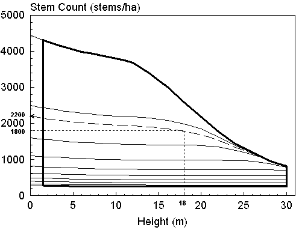
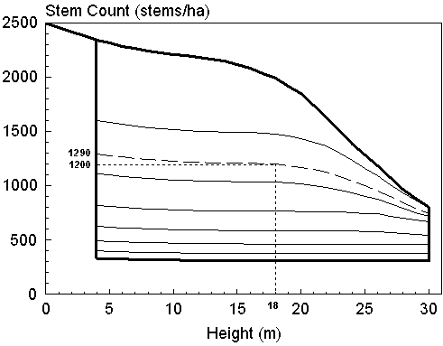

In this Topic Hide
The Existing Stand Option is restricted to the range of initial densities in TIPSY’s database for the particular Stand Regeneration Method specified prior to opening the Existing Stand Option dialogue box. For natural stands (Natural or Clumped) of lodgepole pine and western hemlock, the Existing Stand Option is further restricted to initial densities below 10,000 trees/ha. Consequently, it cannot be used for repressed stands of lodgepole.
The following graph illustrates density trends for planted lodgepole pine over time (height) for initial densities ranging from 278 to 4444 trees/ha. Notice how the number of live trees declines as the stands age and increase in height. The suite of fine solid curves reflect the individual initial densities actually present in the database.

In this example, an existing stand with a current top height of 18m and density of 1800 trees/ha is located on the graph with fine dashed lines. At the intersection of these two lines, TIPSY is able to interpolate the corresponding initial density, i.e., 2200 trees/ha, the coarse dashed curve.
Alternatively, TIPSY's Existing Stand Option dialogue box can also estimate top height from age and site index.
The TIPSY database limits the range of height and density for each species. In this example, these ranges are defined by the heavy lines bounding the suite of curves. I.e., height ranges from a maximum of 36m down to the height at BH Age 1, about 1.5m in this example. And at a top height of 10m, current density must fall between about 250 and 3800 trees. Note, this graph was created with an earlier version of TIPSY and does not reflect the current ranges for pine.
Also notice that the lines in the graph converge at some point beyond 24 m of height if the planting density is relatively high (e.g. > 1 200 trees). Resolution is very poor in this area, particularly if the lines cross by small amounts, and TIPSY can't predict the initial density with any accuracy. This is understandable given the wide variation in future stand conditions that can be experienced by stands established at a common density.
Users should be aware that TIPSY's database reflects a fairly narrow range of stand conditions that affect the densities observed in existing stands, e.g.:
TIPSY does not reflect natural regeneration (ingress) within plantations.
TIPSY reflects a limited range of establishment patterns (temporal and spatial) for natural stands.
TIPSY mortality trends reflect "average" conditions that do not include such things as heavy brush competition or non-endemic forest health impacts. Nor do they reflect stands with abnormally low mortality.
Using similar procedures, the Existing Stand Option can only estimate residual densities immediately after PCT, not initial densities. The graph below illustrates this for lodgepole pine planted at an initial density of 2500 trees/ha (the dark curve at the top). TIPSY applies PCT at a height of 6m on the coast and 4m in the interior (the dark vertical line on the left). The minimum residual density in this example from a previous version of TIPSY is 331 trees/ha (the dark curve at the bottom).

In this example, an existing stand known to have been PCT'd, has a density of 1200 trees/ha at age 18. This corresponds to a post-PCT residual density of 1290 trees/ha.
The stand in this example might have been thinned at a height of 6.4m (age 19), even though TIPSY estimated the post-thinning density at a height of 4.0 m. This is of little concern since the stand had not experienced intense inter-tree competition yet, as witnessed by the crown length of the prime trees. The time of thinning has little impact on yield until the canopy closes and inter-tree competition occurs. To explore this yourself, examine the yield of an unthinned stand (try 0.5m steps from 5 to 7m of height). Notice that before the point of (100%) crown closure, the live crown of prime trees still exceeds 90%.